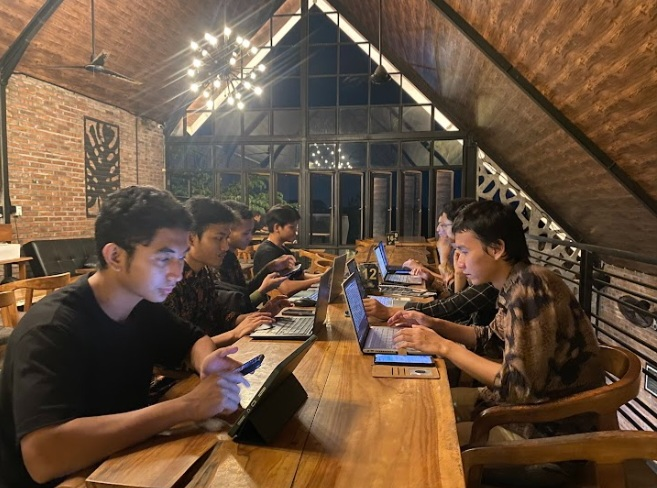
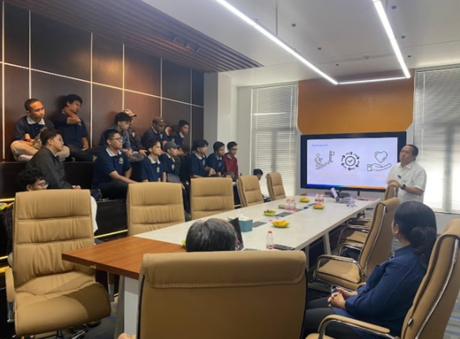
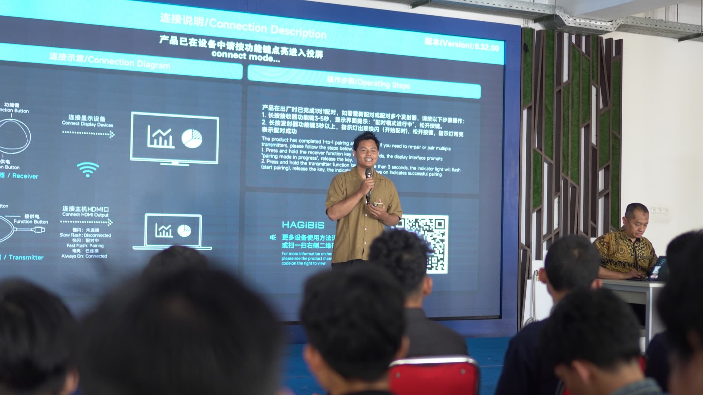
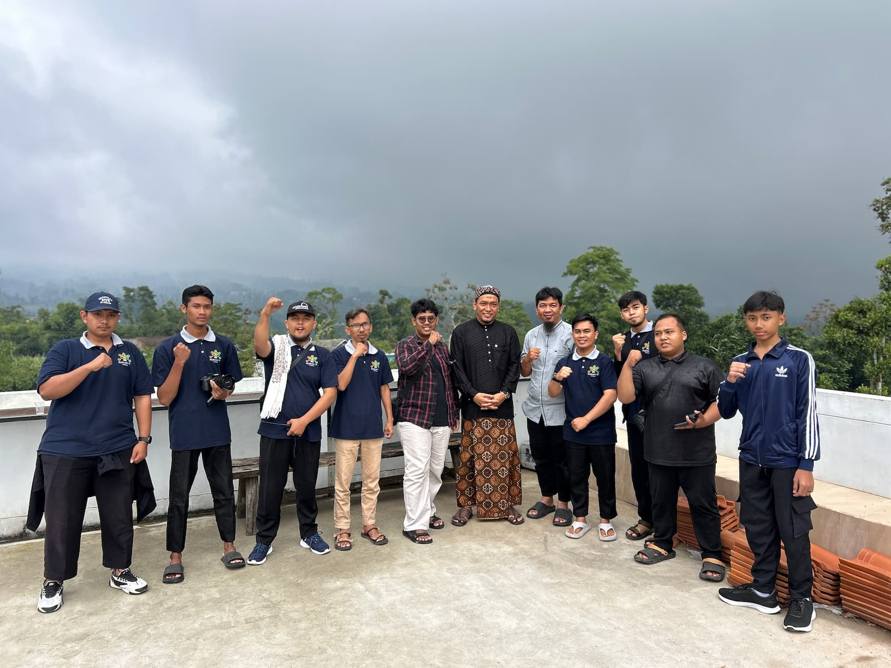
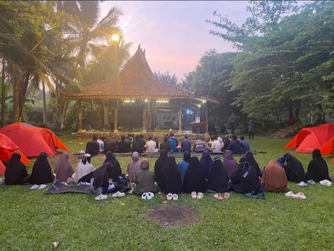
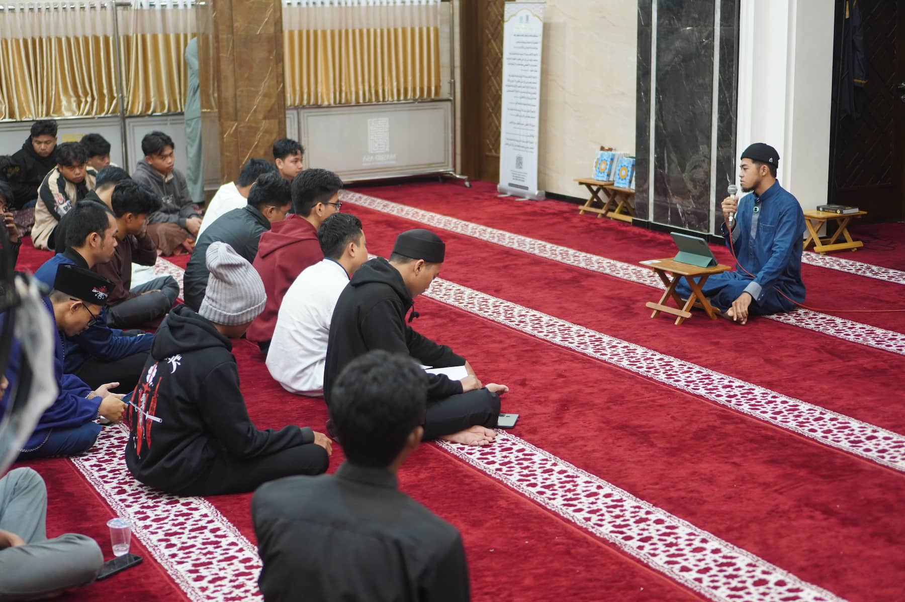

Program boarding untuk kamu yang ingin belajar bisnis digital, membangun karakter, dan mempersiapkan diri menghadapi dunia kerja.
Belajar bukan cuma di kelas. Kenali dunia digital lebih dekat.
Mulai proses pendaftaran dari Rp250.000.

Fokus program
Bisnis Digital
Skill untuk masa depan
Real-World Experience
Belajar lebih dekat dengan dunia kerja
1 Tahun
Fokus membangun skill
Di Rumah IT, proses belajar tidak hanya tentang memahami materi, tetapi juga membangun pengalaman, karakter, dan kesiapan menghadapi dunia kerja.
Belajar kemampuan bisnis digital yang relevan dengan kebutuhan industri.
Mengenal dunia kerja melalui praktik, mentoring, dan kesempatan belajar langsung di perusahaan mitra.
Membuka kesempatan untuk mendapatkan pengalaman belajar di berbagai daerah dan lingkungan profesional.
Pengalaman belajar yang membantu kamu melihat bagaimana skill digital digunakan di dunia kerja.




Tempat belajar bisnis digital, membangun karakter, dan mempersiapkan masa depan dalam lingkungan boarding yang terarah.
Belajar bisnis digital melalui praktik dan tantangan.
Membangun disiplin, tanggung jawab, dan kepemimpinan.
Mengenal dunia kerja dan membangun pengalaman belajar yang lebih luas.
Belajar skill digital melalui praktik, mentoring, dan tantangan yang membantu kamu membangun kemampuan secara bertahap.
Memahami dasar pemasaran dan cara membangun strategi digital.
Belajar membuat konten yang menarik dan relevan.
Mengembangkan kemampuan visual untuk kebutuhan digital.
Memahami komunikasi dan pelayanan pelanggan melalui kanal digital.
Belajar mengelola media sosial untuk brand atau bisnis.
Mengenal strategi periklanan digital melalui Facebook dan Instagram Ads.
Pembelajaran tidak hanya berfokus pada teori, tetapi juga praktik, tugas, dan evaluasi perkembangan.
Belajar melalui tugas dan tantangan yang membantu mengasah kemampuan.
Mendapatkan bimbingan dari mentor berpengalaman.
Membangun disiplin, tanggung jawab, dan kebiasaan positif.

2 Bulan PersiapanPre-program selama 2 bulan membantu calon santri membangun kebiasaan, memahami dasar bisnis digital, dan beradaptasi dengan lingkungan boarding.
Bangun kebiasaan baik, belajar bersama, dan tumbuh dalam lingkungan yang mendukung.
Setiap tahap membantu kami memastikan calon santri siap mengikuti proses belajar dan kehidupan boarding.
Mulai proses pendaftaran Rumah IT.
Ikuti wawancara bersama tim seleksi.
Menunggu pengumuman hasil seleksi awal.
Mendapatkan informasi lanjutan.
Mengikuti masa persiapan dan pembiasaan.
Proses evaluasi sebelum melanjutkan.
Melanjutkan ke program utama bagi yang dinyatakan lulus.
Rumah IT mencari calon santri yang memiliki kemauan kuat untuk belajar dan berkembang.
Setiap perjalanan besar dimulai dari satu keputusan.
Masa persiapan untuk membangun dasar bisnis digital, karakter, dan kesiapan mengikuti program utama.
Pre-program merupakan tahap wajib sebelum melanjutkan ke program utama.
Informasi biaya program utama akan dijelaskan pada tahap selanjutnya.
Bangun skill. Bentuk karakter. Persiapkan masa depan.